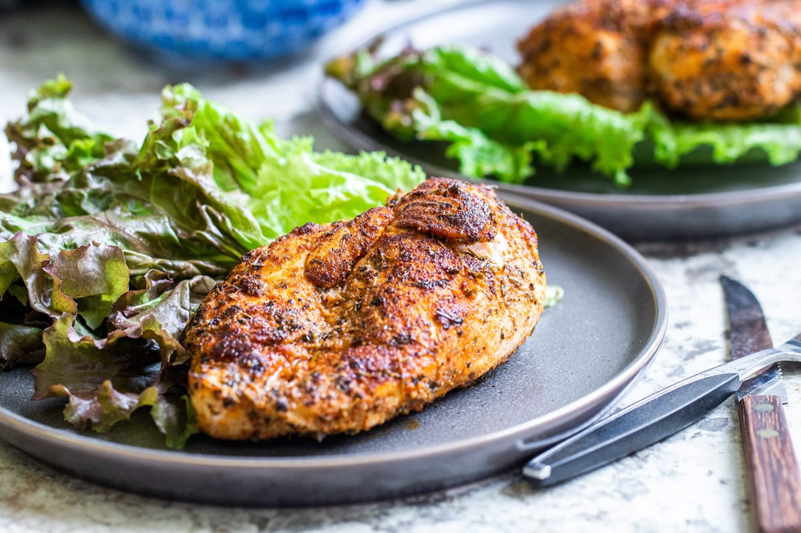

Blackened Ranch Pan-Fried Chicken

Description
Spicy and bold, blackened chicken is a wonderfully flavorful dish that's ready in just 30 minutes. Simply rub with spices, sauté, then bake.
Ingredients
- 1 tablespoon avocado or coconut oil
- 4 chicken thighs
- 2 tablespoons dry ranch dressing mix
- 1 pinch fresh cracked black pepper
Directions
- Heat oil in a cast iron skillet over medium heat. Rub 1 tablespoon dry ranch dressing, salt, and fresh cracked pepper onto 1 side of chicken thighs. Flip and repeat on the other side.
- Place chicken thighs, skin-side down, into the hot oil. Cook over medium heat without moving to blacken skin, about 12 minutes. Turn chicken thighs and cook until chicken is no longer pink in the center and the juices run clear, about 12 more minutes. An instant-read thermometer inserted into the center should read at least 165 degrees F (74 degrees C).
Back to Homepage